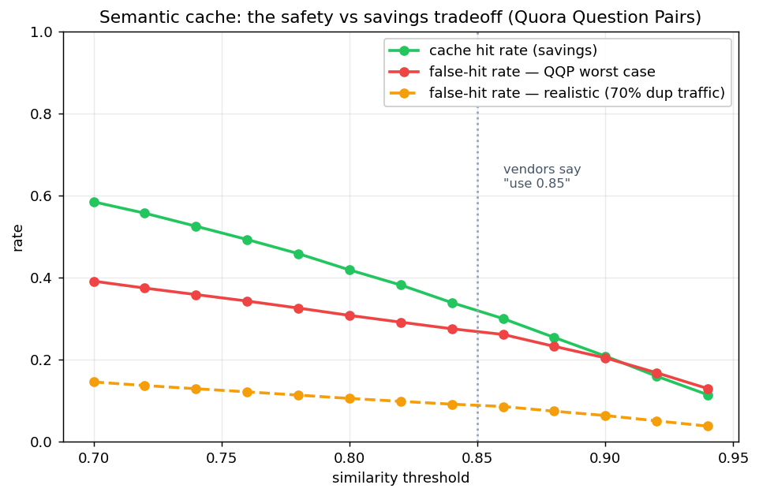
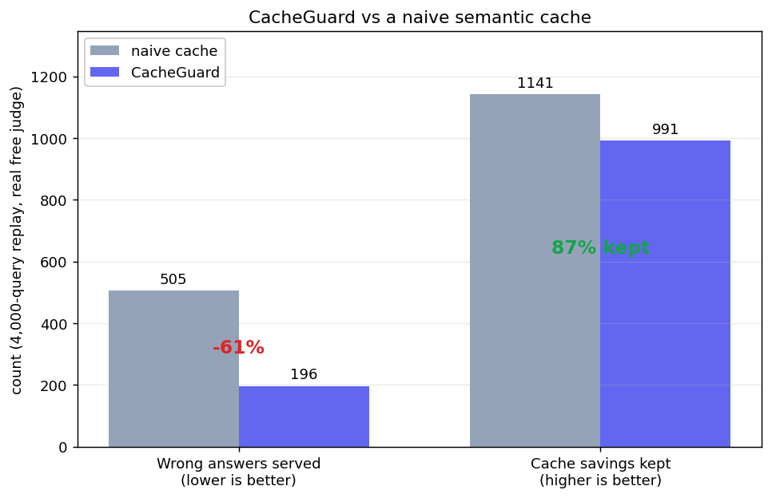

Semantic caching is the standard trick for making LLM apps cheaper. Embed the incoming question, and if it looks close enough to one you have answered before, hand back the saved answer instead of paying for the model again. Simple, effective, and quietly dangerous.
The trap
Look-alike is not the same as same-meaning:
"Refund policy for Europe?" and "Refund policy for the US?" sit at ~0.92 similarity and need completely different answers.
A naive cache sees the high similarity score, serves the Europe answer to the US question, and moves on. No error. No warning. Just a confidently wrong reply that nobody catches until a customer does.
The standard advice for avoiding this is "keep your similarity threshold above 0.85." Every vendor repeats it. None of them publish what 0.85 actually costs you.
So I measured it
I ran a semantic cache against 5,000 human-labeled Quora Question Pairs and swept the threshold, counting how often a "hit" served an answer to a question it did not actually match.

Green is savings, red is the worst case, orange is the realistic wrong-answer rate.
At the magic 0.85 threshold, the realistic false-hit rate sits at about 9 to 10 percent. Roughly one in ten reused answers is wrong.
Here is the part that made me trust the number: it lands directly on top of AWS's own published figure of ~9 percent wrong answers, from their ElastiCache docs. I did not coordinate with them. An independent source agreeing with your measurement is how you know you are measuring reality, not fitting a story you wanted to tell.
Your embedding model is a free safety dial
At the same cache hit rate, the embedding model you pick changes how many wrong answers you serve:
all-mpnet-base-v2: 6.7% wrongbge-small-en-v1.5: 7.5%all-MiniLM-L6-v2(the popular default): 8.1%gte-small: 9.9%
Switching off the popular default cuts wrong answers about 17 percent, for free, at the same savings. Most teams never check this.
The fix: verify only the gray zone
The similarity score is reliable at the extremes and useless in the middle. So split it into three zones:
- Clearly the same (very high similarity): reuse the answer, no questions asked.
- Clearly different (low similarity): call the model.
- The gray zone (the dangerous middle): a free LLM judge reads both questions and decides if reuse is actually safe.
The judge runs only in the gray zone, so the common cases stay instant and you pay the safety check only on the risky minority. The result, with a completely free judge:

61 percent fewer wrong answers, while keeping 87 percent of the cache savings.
The judge was the hard part, and the honest part
Getting the free judge to a number I trusted was a fight, and the fight is the interesting bit:
- A small free model scored 64 percent on the hardest slice. Barely better than a coin flip.
- A bigger free model with few-shot prompting reached 74 percent.
- A more aggressive prompt regressed to 56 percent by becoming paranoid and blocking everything. A useful failure.
- An 8-configuration sweep proved the ceiling is ~71 to 74 percent. It is the adversarial task plus label noise in the data, not a prompt I had not found yet.
That is when the real lesson landed: accuracy is the wrong objective for a safety tool. A false block just regenerates an answer, a small cost. A false reuse serves a wrong answer, the thing you are trying to prevent. Those are not equally bad, so optimizing for raw accuracy is optimizing for the wrong thing.
I almost shipped an 85 percent accuracy target. The honest move was admitting it was both unreachable and the wrong metric, and validating the number a user actually feels: end-to-end wrong-answer reduction.
So I locked the judge to the config that catches the most traps, and gated the whole thing on the 61 percent reduction above. No number in this project was reverse-engineered to look good. Where a target turned out wrong, I replaced it in the open.
When this is worth it, and when it isn't
This is a safety layer, not a cost optimizer. The gray-zone check adds a bounded overhead, so be honest about who needs it:
- Worth it for correctness-sensitive apps, like refunds, support, healthcare, legal, and finance, where one confidently wrong answer costs far more than a sub-second check.
- Not worth it for a casual chatbot where a slightly-off cached answer is harmless. There, a plain cache is fine.
Knowing the difference, and saying it out loud, is the point.
The code
It is free, runs locally, plugs into LiteLLM, and emits OpenTelemetry so it drops into the observability stack you already run. The full benchmark, the safety layer, and every reproducible script are here:
github.com/RudraDudhat2509/cacheguard
Rudra, measuring the things vendors hand-wave.